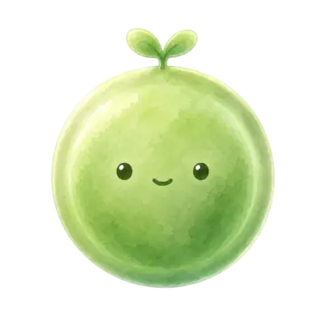

Nature Seed Vẽ một lối đi. Đưa chúng đến bên nhau.
Game giải đố vật lý vẽ đường miễn phí, chơi ngay trên trình duyệt. Vẽ một đường bằng lượng mực có hạn, nó sẽ thành dốc, cầu hoặc điểm đỡ đưa Water Drop đến với Seed. Mỗi màn vượt qua sẽ hồi sinh một khung cảnh khu rừng màu nước.
Phát hành ngày 18 tháng 9 năm 2026 với 100 màn chơi, sao theo hiệu quả nét vẽ và tiến trình được lưu. Game miễn phí trên itch.io, Game Jolt và indiexpo; phiên bản iOS và Android là mục tiêu và hiện chưa có trên các cửa hàng ứng dụng.
Vẽvẽ bằng lượng mực có hạn
Kết nốimang Water Drop đến Seed
Hoa nởđưa khu rừng trở lại
Bên trong bản dựng hiện tại
Những gì bạn vẽ trở thành một phần của màn chơi.
Mỗi nét vẽ bạn chốt đều trở thành một vật thể rắn có va chạm thật, và Water Drop cùng Seed phản ứng với nó. Cả lượng mực lẫn số đường vẽ đều có hạn, nên hình dạng của đường vẽ rất quan trọng.
Trạng thái phát hành Phát hành ngày 18 tháng 9 năm 2026

Tổng quan về trò chơi
Game giải đố vẽ đường thư giãn về việc giúp hai nhân vật nhỏ gặp nhau.
Ý tưởng
Vẽ một con đường, đưa Water Drop và Seed đến bên nhau và xem bản phác thảo yên tĩnh hồi sinh.
Khởi chạy bản dựng
100 màn chơi với cách vẽ bằng cảm ứng, sao theo hiệu quả nét vẽ và tiến trình được lưu giữa các lần chơi.
Đối tượng
Người chơi thích game giải đố nhẹ nhàng, vật lý đơn giản, chủ đề thiên nhiên và những lượt chơi di động ít căng thẳng.
Trạng thái
Phát hành ngày 18 tháng 9 năm 2026 và chơi miễn phí trên trình duyệt. Phiên bản di động là mục tiêu; hiện chưa có trên các cửa hàng ứng dụng.
Tính năng
Bạn làm gì trong Nature Seed.
Đường vẽ vật lý để giải đố
Mỗi câu đố bắt đầu với địa hình, Seed và Water Drop. Nét vẽ của người chơi trở thành dốc, cầu hoặc điểm đỡ nối hai nhân vật lại.
Phản hồi vật lý rõ ràng
Water Drop và Seed di chuyển theo cách bạn có thể theo dõi, nên một lần thất bại sẽ cho bạn thấy cần đổi điều gì.
Phần thưởng phục hồi rừng
Hoàn thành một màn và khung cảnh phác thảo sẽ tràn ngập màu sắc cùng những cái cây lớn dần.
Màn chơi ngắn, vẽ bằng cảm ứng
Các màn chơi ngắn và bạn vẽ bằng cảm ứng, rất hợp với những lượt chơi nhanh trên điện thoại.
Vòng lặp trò chơi
Cách chơi Nature Seed
- Bước 01Đọc bản phác thảo
Tìm các con dốc, khoảng trống và vật cản, cùng cách an toàn nhất để nối hai nhân vật.
- Bước 02Vẽ đường
Vẽ đường của bạn. Nét vẽ sẽ trở thành dốc, đường dẫn hoặc điểm đỡ cho các nhân vật.
- Bước 03Chốt nét vẽ và quan sát
Chốt đường vẽ và xem các nhân vật phản ứng. Bạn sẽ thấy điều gì hiệu quả và điều gì không.
- Bước 04Nở hoa hoặc chỉnh lại
Nếu Water Drop đến được Seed, khu rừng sẽ trở lại. Nếu hụt, hãy vẽ lại với những gì bạn vừa học được.
Câu chuyện / thế giới
Khu rừng phác thảo đang chờ nước.
Nature Seed bắt đầu như một game giải đố vật lý vẽ đường về việc hồi sinh một thứ mong manh, chứ không phải đẩy các vật thể lại với nhau.
Dàn nhân vật gồm Seed, Water Drop và một khu rừng dần chuyển từ bản phác thảo sang đầy màu sắc khi bạn chơi. Mỗi câu đố là một việc nhỏ: quan sát mảnh đất, vẽ một con đường và giúp giọt nước chạm tới thứ có thể lớn lên.
- Hướng thiết kế
- Vật lý êm dịu và sự hồi sinh nhìn thấy được
- Nhân vật
- Water Drop và Seed
- Tương tác
- Vẽ bằng cảm ứng
- Phần thưởng thành thạo
- Giải một dòng kiếm được ba sao
Tóm tắt nhanh
Hiện miễn phí trên trình duyệt, với di động là đích đến.
Bạn có lượng mực và số đường vẽ có hạn. Hãy dùng chúng để đưa Water Drop đến Seed, rồi chơi lại màn đó và rút gọn lời giải xuống một nét để được ba sao.
- Thể loại
- Giải đố vật lý vẽ đường
- Mục tiêu nền tảng
- iOS / Android
- Cấu trúc lượt chơi
- Màn chơi ngắn, nhẹ nhàng
Tải tài nguyên xuống
Nature Seed tài nguyên báo chí và người sáng tạo
Bản xem trước WebP dành cho đưa tin, nhà phát hành xem xét và tham chiếu trang cửa hàng. Có thể cung cấp tệp nguồn độ phân giải đầy đủ khi có yêu cầu.
Thương hiệu và nhân vật
 Water DropNhân vật màu xanh dương cần đến được Seed.
Water DropNhân vật màu xanh dương cần đến được Seed.


Nhân vật SeedNhân vật màu xanh lá mà Water Drop đang cố gắng chạm tới. Sự phát triển của câyCái cây lớn lên sau khi giải xong.
Sự phát triển của câyCái cây lớn lên sau khi giải xong.
 Menu rừngHình nền menu chính.
Menu rừngHình nền menu chính.
 Nền trò chơiHình nền màn chơi với khu vực chơi trống.
Nền trò chơiHình nền màn chơi với khu vực chơi trống.
Màn phác thảo vẽ đường giải đố
 Màn phác thảo 01Bản phác thảo trước khi giải.
Màn phác thảo 01Bản phác thảo trước khi giải.
 Màn phác thảo 02Bản phác thảo trước khi giải.
Màn phác thảo 02Bản phác thảo trước khi giải.
 Màn phác thảo 03Bản phác thảo trước khi giải.
Màn phác thảo 03Bản phác thảo trước khi giải.
 Màn phác thảo 04Bản phác thảo trước khi giải.
Màn phác thảo 04Bản phác thảo trước khi giải.
 Màn phác thảo 05Bản phác thảo trước khi giải.
Màn phác thảo 05Bản phác thảo trước khi giải.
 Màn phác thảo 06Bản phác thảo trước khi giải.
Màn phác thảo 06Bản phác thảo trước khi giải.
 Màn phác thảo 07Bản phác thảo trước khi giải.
Màn phác thảo 07Bản phác thảo trước khi giải.
 Màn phác thảo 08Bản phác thảo trước khi giải.
Màn phác thảo 08Bản phác thảo trước khi giải.
 Màn phác thảo 09Bản phác thảo trước khi giải.
Màn phác thảo 09Bản phác thảo trước khi giải.
 Màn phác thảo 10Bản phác thảo trước khi giải.
Màn phác thảo 10Bản phác thảo trước khi giải.
Cảnh giải đố được khôi phục
 Màn 01 đã khôi phụcĐược hồi sinh sau khi giải xong.
Màn 01 đã khôi phụcĐược hồi sinh sau khi giải xong.
 Màn 02 đã khôi phụcĐược hồi sinh sau khi giải xong.
Màn 02 đã khôi phụcĐược hồi sinh sau khi giải xong.
 Màn 03 đã khôi phụcĐược hồi sinh sau khi giải xong.
Màn 03 đã khôi phụcĐược hồi sinh sau khi giải xong.
 Màn 04 đã khôi phụcĐược hồi sinh sau khi giải xong.
Màn 04 đã khôi phụcĐược hồi sinh sau khi giải xong.
 Màn 05 đã khôi phụcĐược hồi sinh sau khi giải xong.
Màn 05 đã khôi phụcĐược hồi sinh sau khi giải xong.
 Màn 06 đã khôi phụcĐược hồi sinh sau khi giải xong.
Màn 06 đã khôi phụcĐược hồi sinh sau khi giải xong.
 Màn 07 đã khôi phụcĐược hồi sinh sau khi giải xong.
Màn 07 đã khôi phụcĐược hồi sinh sau khi giải xong.
 Màn 08 đã khôi phụcĐược hồi sinh sau khi giải xong.
Màn 08 đã khôi phụcĐược hồi sinh sau khi giải xong.
 Màn 09 đã khôi phụcĐược hồi sinh sau khi giải xong.
Màn 09 đã khôi phụcĐược hồi sinh sau khi giải xong.
 Màn 10 đã khôi phụcĐược hồi sinh sau khi giải xong.
Màn 10 đã khôi phụcĐược hồi sinh sau khi giải xong.
Dòng thời gian phát triển
Dòng thời gian phát triển Nature Seed
- Mùa hè 2025Ý tưởng ban đầu
Nature Seed bắt đầu từ ý tưởng về một game giải đố di động nhẹ nhàng nói về sự kết nối và hồi sinh thiên nhiên.
- Tháng 10 năm 2025Danh tính Seed và Water Drop
Chúng tôi hoàn thành tài liệu thiết kế và chốt Seed cùng Water Drop làm hai nhân vật chính.
- Tháng 12 năm 2025Bắt đầu phát triển
Chúng tôi lên kế hoạch các màn chơi đầu tiên trên giấy, rồi bắt đầu xây dựng, và các hệ thống cốt lõi đã chơi được.
- Tháng 2 năm 2026Đợt lớn làm màn nháp
Một lượt làm thô toàn bộ các màn chơi đã cho chúng tôi nền tảng để trau chuốt và cân bằng sau này.
- Tháng 3 - Tháng 4 năm 2026Cơ chế và rà soát màn chơi
Chúng tôi rà soát các cơ chế phụ và màn nháp, rồi đơn giản hóa hoặc làm lại để game giữ được sự yên bình.
- Tháng 7 năm 2026Đợt nguyên mẫu dọc
Bản dựng tháng 7 đưa việc vẽ với lượng mực có hạn, sao hiệu quả, tiến trình được lưu và cách sinh nét vẽ ổn định vào một vòng chơi hoàn chỉnh.
- Ngày 18 tháng 9 năm 2026Phát hành Nature Seed
Game được phát hành với tên Nature Seed cùng 100 màn chơi, sao theo hiệu quả nét vẽ, tiến trình được lưu và các khung cảnh hồi sinh màu nước.
Câu hỏi thường gặp về Nature Seed
Câu hỏi thường gặp về Nature Seed
Nature Seed có miễn phí không?
Có. Bạn có thể chơi miễn phí trên trình duyệt tại itch.io, Game Jolt và indiexpo.
Nature Seed đã ra mắt chưa?
Rồi. Game phát hành ngày 18 tháng 9 năm 2026 với 100 màn chơi. Phiên bản iOS và Android là nền tảng mục tiêu và hiện chưa có trên các cửa hàng ứng dụng.
Nature Seed là loại game gì?
Game giải đố vật lý vẽ đường thư giãn. Những đường bạn vẽ trở thành vật thể rắn giúp Water Drop và Seed gặp nhau.
Chơi Nature Seed như thế nào?
Quan sát địa hình, vẽ một lộ trình bằng lượng mực có hạn rồi xem cả hai nhân vật phản ứng. Nếu hụt, hãy vẽ lại. Càng ít nét càng nhiều sao, và chỉ một nét sẽ được ba sao.
Ai làm ra Nature Seed?
WillowinWorlds, một studio độc lập làm game giải đố và arcade trên di động.
Tôi có thể dùng tài nguyên báo chí của Nature Seed không?
Được, cho báo chí, nhà phát hành xem xét và tham chiếu trên cửa hàng. Tệp nguồn được giữ riêng tư trừ khi bạn yêu cầu chúng tôi.
Nhật ký phát triển Nature Seed
Điều gì đã thay đổi và khi nào
- Phát hành Nature Seed
Nature Seed ra mắt với tên gọi chính thức dưới dạng game trình duyệt miễn phí trên itch.io, Game Jolt và indiexpo, với 100 màn chơi, sao theo hiệu quả nét vẽ và tiến trình được lưu.
- Vượt qua phục hồi và ổn định cấp 2
Cấp 2 hiện sử dụng cặp nền sản xuất, với thiết lập cấp độ đáng tin cậy hơn, kiểm tra va chạm và phản hồi hoàn thành.
- Tháng 7 năm 2026Bản dựng có thể chơi được
Bản dựng tháng 7 kết hợp việc vẽ nét với lượng mực có hạn, sao hiệu quả, tiến trình được lưu và phản hồi hồi sinh.
- Tháng 4 năm 2026Đợt làm lại màn chơi
Sau một đợt đánh giá nội bộ, chúng tôi làm lại một số màn nháp để giảm độ phức tạp và dễ nhìn hơn trên điện thoại.
- Tháng 3 năm 2026Rà soát cơ chế
Chúng tôi thử các cơ chế phụ và loại bỏ những cơ chế khiến màn chơi bị rối rắm.
- Tháng 2 năm 2026Đợt lớn làm màn nháp
Một lượt làm thô toàn bộ các màn chơi đã trở thành nền tảng cho việc trau chuốt và cân bằng về sau.
- Tháng 12 năm 2025Bắt đầu phát triển
Các hệ thống cốt lõi được chuyển từ tài liệu thiết kế sang dạng có thể chơi được.
- Mùa hè 2025Ý tưởng ban đầu
Phiên bản đầu tiên của Nature Seed là một ý tưởng game giải đố nhẹ nhàng về sự kết nối và hồi sinh thiên nhiên.